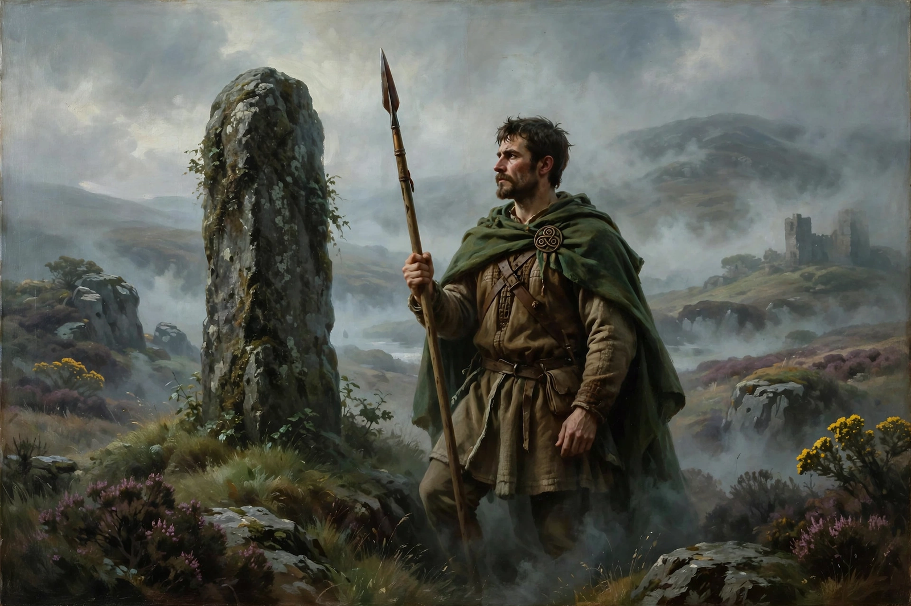

Celtic mythology
From Wikipedia, the free encyclopedia

Celtic mythology is the body of myths belonging to the Celtic peoples, preserved mainly in Irish and Welsh medieval literature, with additional material from Gaulish and Brythonic sources recorded by classical authors. The Irish cycles — the Mythological Cycle, the Ulster Cycle, the Fenian Cycle and the Cycle of the Kings — contain the richest surviving material.
Sources
Unlike the Greeks and Romans, the ancient Celts transmitted their religion orally, and no native mythological texts survive from pre-Christian times. Irish monks of the early Middle Ages wrote down tales in manuscripts such as the Book of Leinster and the Lebor Gabála Érenn (Book of Invasions), while the Welsh material survives chiefly in the Mabinogion. Classical writers including Julius Caesar describe Gaulish gods under Roman names, and archaeology adds evidence from sites such as the Gundestrup cauldron.
Irish mythology
The Mythological Cycle tells of the Tuatha Dé Danann, a supernatural race who arrived in Ireland, defeated the Fomorians, and later withdrew into the hollow hills (sídhe) as the Aos Sí. The Ulster Cycle recounts the deeds of Cú Chulainn and the great cattle-raid epic Táin Bó Cúailnge, while the Fenian Cycle follows Fionn mac Cumhaill and his warrior band, the Fianna.
Welsh mythology
The Four Branches of the Mabinogi tell of Pwyll, Prince of Dyfed, the tragic Branwen, and the magician-heroes Math and Gwydion. Welsh tradition also preserved the seeds of Arthurian legend: figures such as Arthur, Culhwch and the enchantress Ceridwen appear in Welsh tales centuries before Arthurian romance flourished in France.
Themes and legacy
Recurring themes include journeys to the Otherworld, shape-shifting, sacred kingship, head-hunting and the sovereignty goddess. Celtic mythology was revived during the nineteenth-century Celtic Revival and has influenced modern fantasy literature, from J. R. R. Tolkien to contemporary role-playing games.